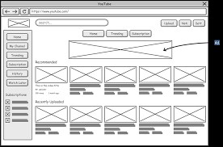

Etapa de desarrollo
WANDERER | WANDERER | WANDERER WANDERER | WANDERER | WANDERER WANDERER | WANDERER | WANDERER WANDERER | WANDERER | WANDERER WANDERER | WANDERER | WANDERER WANDERER | WANDERER | WANDERER WANDERER | WANDERER | WANDERER WANDERER | WANDERER | WANDERER WANDERER | WANDERER | WANDERER WANDERER | WANDERER | WANDERER WANDERER | WANDERER | WANDERER
Desarrollo del mapa de sitio
En esta etapa, se crea una representación visual de la estructura del sitio web. El mapa del sitio muestra la jerarquía de las páginas, la organización de la información y las relaciones entre ellas. Esto ayuda a definir la navegación del sitio y a planificar la distribución del contenido.
Creación de wireframes y prototipos
Los wireframes son esquemas básicos y sin diseño visual que representan la
disposición de los elementos en cada página del sitio web. Los prototipos
son versiones interactivas y más avanzadas de los wireframes, que permiten
simular la navegación y la funcionalidad del sitio. Estas herramientas ayudan
a visualizar la estructura y el flujo de la interfaz de usuario antes de
pasar al diseño final.

Diseño visual o maqueta
En esta etapa, se aplica el diseño visual a los wireframes. Las maquetas son
versiones estáticas y detalladas del sitio web, se utilizan para definir la
apariencia estética del sitio, incluyendo colores, tipografía, imágenes y otros
elementos visuales.
La finalidad es crear el aspecto final del sitio web. Esto incluye el diseño de
todas las páginas, la optimización de la legibilidad y la accesibilidad, y la
incorporación de elementos visuales que reflejen la identidad de la marca.

Creación de contenidos
Se desarrolla el contenido del sitio web, incluyendo texto, optimización de imágenes, videos, gifs animados, iconos y otros recursos multimedia. El contenido debe ser relevante, claro y atractivo para los usuarios, y debe estar optimizado para motores de búsqueda (SEO) y para cumplir con los objetivos del sitio web.